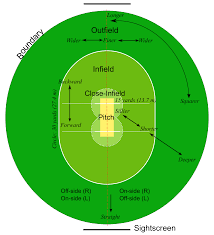

REGLAS DE CRICKET

- Cada equipo está formado por 11 jugadores.
- El lanzador debe lanzar 6 entregas legales para constituir un over.
- Un juego debe tener dos árbitros en cada extremo del portillo. Luego, los árbitros deben contar el número de bolas en el over, tomar decisiones sobre si los bateadores están fuera después de una apelación y también verificar que el lanzador haya lanzado un lanzamiento legal.
- Un bateador puede ser entregado ya sea al ser lanzado (la bola golpea sus tocones), atrapado (el fildeador atrapa la bola sin que rebote), Pierna antes de Wicket (la bola golpea las almohadillas del bateador impidiendo su línea en los tocones), El portero golpea los tocones con sus guantes mientras el bateador está fuera de su pliegue con la pelota en la mano), golpea el wicket (el bateador golpea su propio wicket), Bola manejada (el bateador maneja la pelota de cricket a propósito), tiempo de espera (el jugador no alcanza el pliegue dentro de los 30 segundos de que el bateador anterior abandona el campo), golpea la bola dos veces (el bateador golpea la bola de cricket dos veces con su bate) y obstrucción (el bateador deliberadamente evita que el fildeador reciba la pelota).
- El cricket de prueba se juega durante 5 días donde cada equipo tiene dos entradas (o dos oportunidades de batear).
- Los puntajes son acumulativos y el equipo con más carreras después de cada entrada es el ganador.
- Un día de cricket se juega con 50 overs. Cada equipo tiene 50 overs para batear y lanzar antes de intercambiar y hacer la disciplina anterior. Gana el equipo con más carreras al final del juego.
- Los juegos internacionales tendrán otros dos árbitros conocidos como el tercer y cuarto árbitro. Estos están en su lugar para revisar cualquier decisión que los árbitros de campo no puedan tomar.
- El equipo de fildeo debe tener un portero designado que es la única persona autorizada a usar almohadillas y guantes en el campo. El portero del portillo se para detrás del extremo opuesto al jugador de bolos para atrapar la bola.
INICIO
EL FUTBOL
EL CRICKET